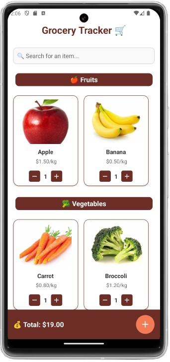
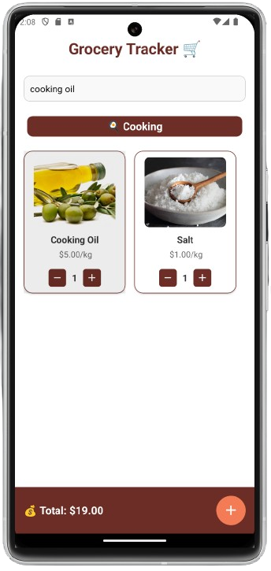
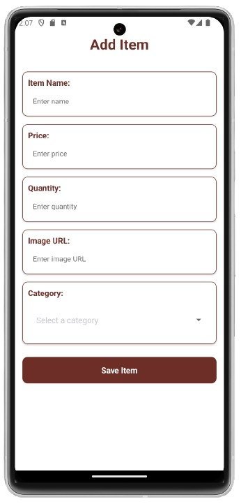

Project Screens




The Grocery Tracker App is an intuitive and dynamic mobile application built with React Native. It is
designed to help users effortlessly manage their grocery shopping lists. With powerful features such as
dynamic list management, robust cost tracking, and real-time updates, this app offers a seamless user
experience for grocery shoppers.
The Grocery Tracker App features a warm and inviting design inspired by the natural and fresh feel of
groceries. It uses earthy tones like brown, accented with vibrant reds, greens, and oranges, creating a
cohesive and visually appealing interface. Categories like Fruits, Vegetables, and Cooking are marked with
bold, vibrant headers for easy navigation, while item cards have a clean and modern design that displays
essential details like name, price, image, and quantity.
e buttons for adjusting quantities and a
bright orange floating action button (FAB) for adding items ensure ease of use. The input forms are clearly
labeled for readability, and the dynamic total cost bar at the bottom, highlighted with a subtle yellow
icon, keeps users informed in real time. This thoughtful combination of colors, layout, and intuitive
elements ensures a pleasant and efficient user experience.
The Grocery Tracker App is a powerful yet simple tool to help users manage their grocery shopping list
efficiently. It allows users to add, edit, search, and delete items while keeping track of the total cost in
real-time. With intuitive forms for adding item details such as name, price, quantity, and category, the app
provides a smooth experience for organizing groceries. The categorization feature groups items for easy
browsing, and a floating action button ensures quick access to essential actions. Whether you're planning
your weekly shopping trip or monitoring your grocery expenses, the app offers all the tools needed to stay
organized.